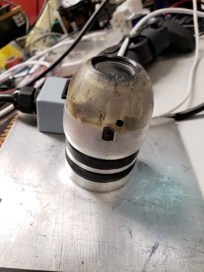

Carnegie Mellon University: Biorobotics Lab Undergraduate Researcher (January 2019-present)
Since freshman year, I've been doing research at the Biorobotics Lab, mainly on state estimation and control for snake robots. I outline some of my projects below.
Underwater Snake Control
My latest research concerns control algorithms for underwater snake robots. One of my key accomplishments so far has been implementing a closed-loop heading controller using feedback from a complementary filter. The algorithm is based on "Control on the sphere and reduced attitude stabilization," by Bullo et. al.
My eventual goal is to transfer my trajectory-following work from simulation onto the physical robot:
I've primarily been working with C++ and ROS, running simulations in CoppeliaSim.
Stereo Visual Odometry
I developed a pipeline to estimate the position and orientation of a moving camera using OpenCV and ROS, performing nonlinear optimization using Ceres Solver. Below are the results on the KITTI dataset. One of my current goals is to integrate other sensors into this pipeline and use it for snake robots.
Code (C++): https://github.com/EpicDuckPotato/stereo_vo/tree/bundle_adjustment
Extended Kalman Filter
I wrote an extended Kalman filter (EKF) to estimate the orientation of a snake robot. It fuses data from all the inertial measurement units (IMUs) and encoders on the snake's body, and incorporates outlier detection to account for individual sensor failures. I used the algorithm from "Robust State Estimation With Redundant Proprioceptive Sensors," by David Rollinson. I used C++ within a ROS environment.
Shape-Based Compliant Control
I prototyped algorithms enabling a snake robot to maneuver past obstacles by complying the shape of its body. The algorithms were derived from "Shape-Based Compliance in Locomotion," by Matthew Travers. I primarily worked in MATLAB.
Sensor Diagnostic Tool
The lab needed a tool to quickly diagnose stale sensors on the snake. I developed this tool within a wxPython GUI.
Auto-Orienting Camera Feed
The orientation of a snake robot's head changes constantly as it moves. Even if the snake's head is upside down relative to its starting orientation, its operator should have a right-side up camera feed. I implemented this functionality in a ROS node using Python and OpenCV.
Johns Hopkins University: LIMBS Lab NSF REU Research Intern (May 2020-July 2020)
As a researcher at Johns Hopkins, I developed algorithms to estimate the pose of weakly electric fish with an array of electrodes. Estimating these fishes' states will be useful in understanding their group behavior, as well as the ecology of their environment. One of my main accomplishments was deriving a physics-based algorithm to efficiently initialize electric fish trackers. My algorithm relies on the interpolated potential and gradient fields shown below. The actual fish pose is shown using a black ellipse, and the electrodes are shown with black dots.
Using this algorithm, I made the lab's existing fish tracker 40 times more memory efficient. Specifically, the existing tracker used a particle filter with 20,000 particles. With my initialization method, it achieves similar accuracy with only 500.
I also used the algorithm to design an extended Kalman filter (EKF), with the goal of improving the tracker's speed. While this worked well in certain cases (as below), the particle filter still achieved a better accuracy on average.
I was awarded "Best Presentation" at the final REU seminar for my work, and I presented my research at SICB 2021 (both were held remotely due to the COVID-19 pandemic). I primarily worked in MATLAB.
Analytical Graphics Inc. Software Engineering Intern (May 2019-July 2019)
As an intern at AGI, I worked on STK Components, an aerospace simulation API for C# and Java. My main accomplishments were:
- Enabling higher resolution terrain simulation by adding support for a new type of terrain file
- Writing a tutorial page for Components' numerical integrators, analyzing their effectiveness for various systems of differential equations
- Testing Components’ astronomical capabilities against the Standards of Fundamental Astronomy
- Adding new coordinate types (DynamicDelaunayElements, DynamicEquinoctialElements, DynamicKozaiIzsakMeanElements) for orbit representation.